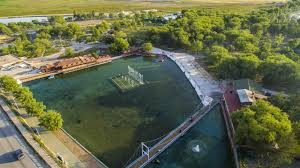

Erzincan Tanıtmı
Bu website de Erzincan hakkında gezilebilecek yerlere ulaşabilirsiniz
Erzincan ekşisu mesire alanı
Burası erzincanda gezilebilecek güzel yerler
arasında akan sular maden suyu yapımında kullanılıyor
Ergan Dağı

Erzincanda kayak Merkezi olarak da kullanılan
içinde göl olan güzel bir mekan
Erzincan Türbesi

Erzincan'ın en büyük mezarlığı
olan Kaledibi Mezarlığı'na, 1848 yılında
vefat eden Terzibaba'nın defnedilmesiyle
mezarlığın adı Terzibaba Mezarlığı olmuştur
Erzincan şelalesi (çağlayan)
Şelale; doğal güzellikleri, bitki örtüsü,
ağaçları, serin havası ve dinlenme yerleriyle
Erzincan' ın en çok tercih edilen mesire yeridir.
Erzincan Dörtyol

Erzincan Dörtyol meydanı erzincanın
ortasıdır ortasına dörtyol bağlandığından
dolayı adı Dörtyoldur
Erzincan Valiliği